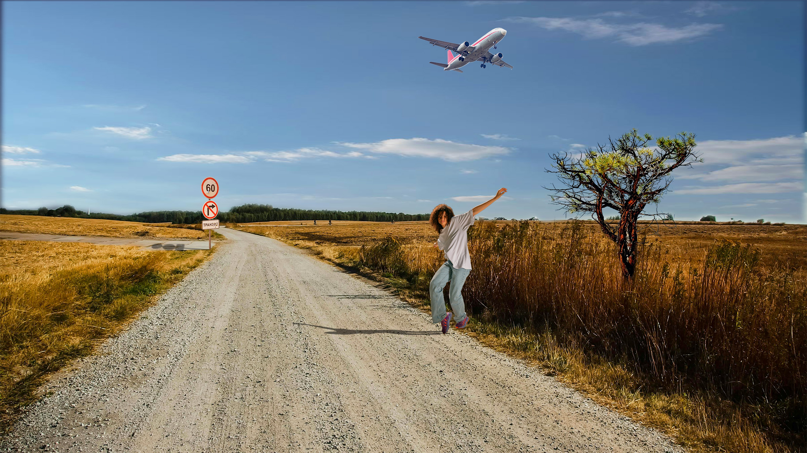

Vizualno rješenje 2. projektnog zadatka, uređivanje fotografije, rađeno u Adobe Photoshopu
Vizualno rješenje 5. vježbe, retuširanje, rađeno u Adobe Photoshopu
Vizualno rješenje 6. vježbe, koloriranje, rađeno u Adobe Photoshopu
Vizualno rješenje 7. vježbe, uređivanje fotografije, rađeno u Adobe Photoshopu

Vizualno rješenje 8. vježbe, kinemagraf, rađeno u Adobe Premiere Pro
Vizualno rješenje 1. projektnog zadatka, rad s vektorima, rađeno u Adobe Illustratoru
Vizualno rješenje 3. vježbe, kopiranje rotacijom i uzorak, rađeno u Adobe Illustratoru

Dominik Ban